HaDeX: Analysis and Visualisation of Hydrogen/Deuterium Exchange Mass Spectrometry Data
Weronika Puchała, Michał Burdukiewicz
15.02.2019
overview.RmdHydrogen/Deuterium Exchange Mass Spectrometry Data
Hydrogen-deuterium mass spectrometry (HDX-MS) is a staple tool for monitoring dynamics and interactions of proteins. Due to the sheer size of the HDX-MS results, the data analysis require a dedicated software suite. However, the majority of existing tools provides only point-and-click interfaces to black-box models or does not offer a complete workflow. We propose HaDeX, a novel tool for processing, analysis and visualisation of HDX-MS experiments. HaDeX covers the whole analytic process, including preliminary data exploration, quality control and generation of publication-quality figures. The reproducibility of the whole procedure is ensured with advanced reporting functions.
General data manipulation
Input file format
The HaDeX web server works only on data in the DynamX datafile format (Waters Corp.). It must contains a following set of columns with specified properties:
Although data can be imported into R using other tools, we strongly advice to rely on the read_hdx() function:
dat <- read_hdx(system.file(package = "HaDeX", "HaDeX/data/KD_190304_Nucb2_EDTA_CaCl2_test02_clusterdata.csv"))## Parsed with column specification:
## cols(
## Protein = col_character(),
## Start = col_double(),
## End = col_double(),
## Sequence = col_character(),
## Modification = col_logical(),
## Fragment = col_logical(),
## MaxUptake = col_double(),
## MHP = col_double(),
## State = col_character(),
## Exposure = col_double(),
## File = col_character(),
## z = col_double(),
## RT = col_double(),
## Inten = col_double(),
## Center = col_double()
## )Currently, read_hdx() supports .csv, .tsv and .xls files fullfilling the data structure described above.
Protein coverage
First information user can get is protein sequence reconstruction based on supplemented data. Although the sequence should be known to the experimenter, it is useful to see how the sequence was covered in the experiment. Function reconstruct_sequence() does that:
reconstruct_sequence(dat)## [1] "xxxxxxxxxxxxxxxxVPIDIDKTKVKGEGHVEGEKIENPDTGLYYDEYLRQVIDVLETDKHFREKLQTADIEEIKSGKLSRELDLVSHHVRTRLDELKRQEVARLRMLIKAKMDSVQDTGIDHQALLKQFEHLNHQNPDTFEPKDLDMLIKAATSDLENYDKTRHEEFKKYEMxxxxxxxxxxxxLDEEKRQREESKFGEMxxxxxxxxxxxxxxxxxxxKEVWEEADGLDPNEFDPKTFFKLHDVNNDRFLDEQELEAxFTKELEKVYDPKNEEDDMVEMEEERLxxxxHVMNEVDINKDRLVTLEEFLRATEKKEFLEPDSWETLDQQQLFTEDELKEFESHISQQEDELRKKAEELQKQKEELQRQHDQLQAQEQELQQVVKQMEQKKLQQANPPAGPAGELK"Unknown amino acids are marked as x according to the IUPAC conventions.
Additionally, coverage information can be presented on a plot using function graphic_overlapping(). Peptides positions are shown next to each other for easier data overview.
graphic_overlapping(dat, chosen_state = "gg_Nucb2_CaCl2")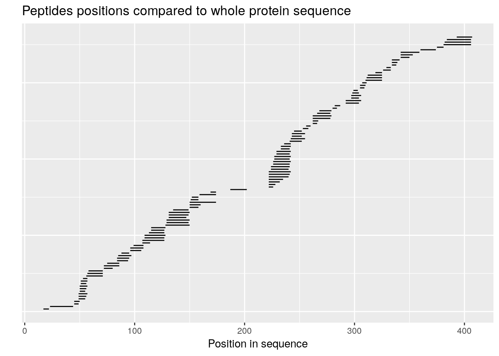
User can choose which state (or states) should be included in shown data. If this parameter is not supplied, the first possible state is chosen. If given peptide data is available in more than one state, is shown once for readability.
Data preparation for deuteration calculations
There are a few steps of preliminary data preparation. All of the listed transformation in this section is done by prepare_dataset() function. Product of calling prepare_dataset() on data read by read_hdx() is later referred as calc_dat.
Measured data to useful value
DynamX provides experimental data as measured mass plus proton mass to charge ratio (\(Center\)). For later use, this value has to be transformed into overall peptide mass, as shown in equation 1:
\[expMass = z*(Center-protonMass)\tag{1}\] where:
\(expMass\) - result calculated from partial values
\(z\) - charge
\(Center\) - experimentally measured value - mass plus proton mass per charge ratio
This transformation is applied to every measurement.
The experiment is repeated at least three times for the results to be reliable. Then, the repetitions are aggregated as weighted mean into one result per peptide using equation 2:
\[expMass = \frac{Inten*expMass}{N}\tag{2}\] where:
\(Inten\) - Intensivity
\(N\) - number of repetitions
In input file is data from more than one measurement. The mean value for each time in each state is treated as a result. This means that the uncertainty is calculated using the standard deviation of the mean:
\[u(x) = \sqrt{\frac{ \sum_{i=1}^n \left( x_{i} - \overline{x} \right)^2}{n(n-1)}}\tag{3}\] where:
\(x_{i}\) - measurement
\(\overline{x}\) - mean value
\(n\) - number of measurements
Experimental deuteration level
In HDX-MS experiments the subject of interest is deuteration level exchanged in a given time between two states. Generally, the experimental relative deuteration level is calculated as shown in equation 4. It is a function of three variables and produces a value for the chosen state and chosen time \(t\).
\[D = \frac{D_{t} - D_{0}}{D_{100} - D_{0}}\tag{4}\]
where:
\(D\) - deuteration level (relative value)
\(D_{0}\) - deuteration in \(in\) time (0 or close to 0, measured) - mean value obtained as explained before
\(D_{100}\) - deuteration in \(out\) time (possibly big, at least 1440 [min]) - mean value obtainted as explained before
\(D_{t}\) - deuteration measured in chosen time - mean value obtainted as explained before
Although equation 4 produces relative value, absolute values are also calculated in HaDeX adjusting the equation to its variance as shown in equation 4a:
\[D = D_{t} - D_{0}\tag{4a}\] Functions in HaDeX package contain logical value \(relative\) to determine if values should be absolute or relative. Methodology below is described on relative values for readability. Absolute values are obtained analogical way, but without scaling.
Uncertainty calculations
The uncertainty of measurement is variability associated with the precision of measuring instrumentation. To the best of our knowledge, we present here the first derivation of uncertainty formulas for HDX-MS data. To calculate uncertainty related to functions of more than one variables (eq. equation 4) the Law of propagation of uncertainty is defined by equation 5:
\[u_{c}(y) = \sqrt{\sum_{k} \left[ \frac{\partial y}{\partial x_{k}} u(x_{k}) \right]^2}\tag{5}\]
We assume uncorrelatedness of HDX-MS measurements, because XXX.
After adapting the equation 5 using formula from equation 4, uncertainty of equation 4 is calculated as follows:
\[u_{c}(D) = \sqrt{\sum_{k} \left[ \frac{\partial D}{\partial D_{k}} u(D_{k}) \right]^2 }\tag{6}\]
where:
\(k \in {0, t, 100}\)
\(D_{k}\) - deuteration in k time
\(u(D_{k})\) - uncertainty associated with \(D_{k}\) as standard deviation of the mean value
Then, expanding the equation 6:
\[u_{c}(D) = \sqrt{ \left[ \frac{1}{D_{100}-D_{0}} u(D_{t}) \right]^2 + \left[ \frac{D_{t} - D_{100}}{(D_{100}-D_{0})^2} u(D_{0}) \right]^2 + \left[ \frac{D_{0} - D_{t}}{(D_{100}-D_{0})^2} u(D_{100}) \right]^2}\tag{7}\] As suspected, the uncertainty associated with \(D_{t}\) has the biggest impact on \(u_{c}(D)\).
Theoretical deuteration level
Other way to examine the data rather then experimental way are the theoertical calculations - obtained relative deuteration level in chosen time \(t\) is compared with theoretical values as shown in equation 8:
\[D = \frac{D_{t}-MHP}{MaxUptake*protonMass}\tag{8}\]
where:
\(D_{t}\) - deuteration measured in chosen time
\(MHP\) - theoretical mass for peptide (constant)
\(MaxUptake\) - max proton uptake for peptide (constant)
\(protonMass\) - mass of a proton (constant).
Absolute value is calculates as in equation 8 without scalling, as shown in equation 8a:
\[D = D_{t} - MHP\tag{8a}\]
The uncertainty of the function of one variable is defined by the equation 9:
\[u(y) = \left| \frac{dy}{dx} u(x) \right|\tag{9}\]
and based on equation 8:
\[u(D) = \left|\frac{1}{MaxUptake*protonMass} u(D_{t}) \right|\tag{10}\]
For the absolute values, \(u(D)\) is identical with \(u(D_{t})\), based on equation 8a and 9.
Difference of deuteration levels between two states
Interesting observance can be gained from analysing the difference of deuteration levels in given time \(t\) between two states as shown in plot in Woods format. For this, deuteration level in one state \((D_{2})\) is subtracted from deuteration level in other state \((D_{1})\):
\[diff = D_{1} - D_{2}\tag{11}\]
and the uncertainty of function of two variables (based on equation 11 and 5):
\[u_{c}(diff) = \sqrt{u(D_{1})^2 + u(D_{2})^2}\tag{12}\] All of the previous calculations are done by function prepare_dataset(). Example of use:
calc_dat <- prepare_dataset(dat,
in_state_first = "gg_Nucb2_EDTA_0.001",
chosen_state_first = "gg_Nucb2_EDTA_25",
out_state_first = "gg_Nucb2_EDTA_1440",
in_state_second = "gg_Nucb2_CaCl2_0.001",
chosen_state_second = "gg_Nucb2_CaCl2_25",
out_state_second = "gg_Nucb2_CaCl2_1440") Comparison plot
The levels of deuteration along with uncertainty intervals are shown on comparison plot. HaDeX provides both experimental and theoretical levels of deuteration in either relative or absolute values. Example of use:
– theoretical:
- relative values:
comparison_plot(calc_dat = calc_dat,
theoretical = TRUE,
relative = TRUE,
state_first = "Nucb2 Factor 1",
state_second = "Nucb2 Factor 2") +
labs(title = "Theoretical fraction exchanged in state comparison in 25 min time")
- absolute values:
comparison_plot(calc_dat = calc_dat,
theoretical = TRUE,
relative = FALSE,
state_first = "Nucb2 Factor 1",
state_second = "Nucb2 Factor 2") +
labs(title = "Theoretical fraction exchanged in state comparison in 25 min time")
– experimental:
- relative values:
comparison_plot(calc_dat = calc_dat,
theoretical = FALSE,
relative = TRUE,
state_first = "Nucb2 Factor 1",
state_second = "Nucb2 Factor 2") +
labs(title = "Fraction exchanged in state comparison in 25 min time")
- absolute values:
comparison_plot(calc_dat = calc_dat,
theoretical = FALSE,
relative = FALSE,
state_first = "Nucb2 Factor 1",
state_second = "Nucb2 Factor 2") +
labs(title = "Fraction exchanged in state comparison in 25 min time")
Woods plot
Woods plot format shows the difference between the results of two different states as described by equation 11. HaDeX provides both experimental and theoretical calculations in either relative or absolute values. Example of use:
– theoretical:
- relative values:
woods_plot(calc_dat = calc_dat,
theoretical = TRUE,
relative = TRUE) +
labs(title = "Theoretical fraction exchanged between states in 25 min time")
- absolute values:
woods_plot(calc_dat = calc_dat,
theoretical = TRUE,
relative = FALSE) +
labs(title = "Theoretical fraction exchanged between states in 25 min time")
– experimental:
- relative values:
woods_plot(calc_dat = calc_dat,
theoretical = FALSE,
relative = TRUE) +
labs(title = "Theoretical fraction exchanged between states in 25 min time")
- absolute values:
woods_plot(calc_dat = calc_dat,
theoretical = FALSE,
relative = FALSE) +
labs(title = "Theoretical fraction exchanged between states in 25 min time")
Confidence limit in Woods plot
The function calculate_confidence_limit_values() calculates confidence limit values the way that is described in Houde, D., Berkowitz, S.A., and Engen, J.R. (2011). The Utility of Hydrogen/Deuterium Exchange Mass Spectrometry in Biopharmaceutical Comparability Studies. J Pharm Sci 100, 2071–2086.
calculate_confidence_limit_values(calc_dat = calc_dat,
confidence_limit = 0.99,
theoretical = FALSE,
relative = TRUE) ## [1] -0.01619004 0.01619004Function add_stat_dependency() returns calc_dat extended by column describing relation of given peptide with confidence limit.
add_stat_dependency(calc_dat,
confidence_limit = 0.98,
theoretical = FALSE,
relative = TRUE)## # A tibble: 108 x 29
## Sequence Start End Med_Sequence frac_exch_state… err_frac_exch_s…
## <chr> <dbl> <dbl> <dbl> <dbl> <dbl>
## 1 VPIDID 17 22 19.5 NaN NaN
## 2 KTKVKGE… 23 44 33.5 NaN NaN
## 3 YYDEY 45 49 47 0.975 0.00984
## 4 YYDEYL 45 50 47.5 0.679 0.00549
## 5 YLRQVID 49 55 52 0.453 0.00309
## 6 YLRQVIDV 49 56 52.5 0.428 0.00341
## 7 YLRQVID… 49 57 53 0.417 0.00271
## 8 LRQVID 50 55 52.5 0.520 0.00660
## 9 LRQVIDV 50 56 53 0.450 0.00248
## 10 LRQVIDVL 50 57 53.5 0.414 0.00346
## # … with 98 more rows, and 23 more variables: frac_exch_state_2 <dbl>,
## # err_frac_exch_state_2 <dbl>, diff_frac_exch <dbl>,
## # err_frac_exch <dbl>, abs_frac_exch_state_1 <dbl>,
## # err_abs_frac_exch_state_1 <dbl>, abs_frac_exch_state_2 <dbl>,
## # err_abs_frac_exch_state_2 <dbl>, abs_diff_frac_exch <dbl>,
## # err_abs_diff_frac_exch <dbl>, avg_theo_in_time_1 <dbl>,
## # err_avg_theo_in_time_1 <dbl>, avg_theo_in_time_2 <dbl>,
## # err_avg_theo_in_time_2 <dbl>, diff_theo_frac_exch <dbl>,
## # err_diff_theo_frac_exch <dbl>, abs_avg_theo_in_time_1 <dbl>,
## # err_abs_avg_theo_in_time_1 <dbl>, abs_avg_theo_in_time_2 <dbl>,
## # err_abs_avg_theo_in_time_2 <dbl>, abs_diff_theo_frac_exch <dbl>,
## # err_abs_diff_theo_frac_exch <dbl>, valid_at_0.98 <lgl>Additional tools
HaDeX provides additional tools for assement of experiments.
Quality control
Function quality_control() shows how the mean uncertainty per peptide changes with time points of an experiment. Example of use:
result <- quality_control(dat = dat,
state_first = "gg_Nucb2_EDTA",
state_second = "gg_Nucb2_CaCl2",
chosen_time = 25,
in_time = 0.001,
relative = TRUE)As the function returns data.frame with calculated value, here is an example of result visualization:
ggplot(result[result["time"]>=1,]) +
geom_line(aes(x = time, y = avg_err_state_first, color = "Average error (first state)")) +
geom_line(aes(x = time, y = avg_err_state_second, color = "Average error (second state)")) +
scale_x_log10() +
labs(x = "log(time) [min]", y = "Average uncertainty", title = "Uncertainty change") +
theme_bw(base_size = 11) +
theme(legend.position = "bottom",
legend.title = element_blank())
Example above is based on relative values. Although HaDeX provides results in absolute values, be aware that absolute calculations don’t contain time out (it is used for scaling), so the uncertainty is not the function of \(D_{100}\) - it is constant.
HaDeX Graphical User Interface
All of the functions mentioned below are wrapped together in the HaDeX Shiny app. It is launched by the HaDeX_gui() function.
Example workflow
- File import
- Sequence reconstruction
- Woods plots.
Example workflow 1
library(HaDeX)
# file import
dat_1 <- read_hdx(system.file(package = "HaDeX", "HaDeX/data/KD_180110_CD160_HVEM.csv"))## Parsed with column specification:
## cols(
## Protein = col_character(),
## Start = col_double(),
## End = col_double(),
## Sequence = col_character(),
## Modification = col_logical(),
## Fragment = col_logical(),
## MaxUptake = col_double(),
## MHP = col_double(),
## State = col_character(),
## Exposure = col_double(),
## File = col_character(),
## z = col_double(),
## RT = col_double(),
## Inten = col_double(),
## Center = col_double()
## )# protein sequence reconstruction
reconstruct_sequence(dat_1)## [1] "INITSSASQEGTRLNLICTVWHKKEEAEGFVVFLCKDRSGDCSPETSLKQLRLKRDPGIDGVGEISSQLMFTISQVTPLHSGTYQCCARSQKSGIRLQGHFFSILFxxxxxxxxxxxxxxxxxxFSHNEGTL"# calculate data
calc_dat_1 <- prepare_dataset(dat = dat_1,
in_state_first = "CD160_0.001",
chosen_state_first = "CD160_1",
out_state_first = "CD160_1440",
in_state_second = "CD160_HVEM_0.001",
chosen_state_second = "CD160_HVEM_1",
out_state_second = "CD160_HVEM_1440")
# theoretical comparison plot - relative values
comparison_plot(calc_dat = calc_dat_1,
theoretical = TRUE,
relative = TRUE,
state_first = "CD160",
state_second = "CD160_HVEM")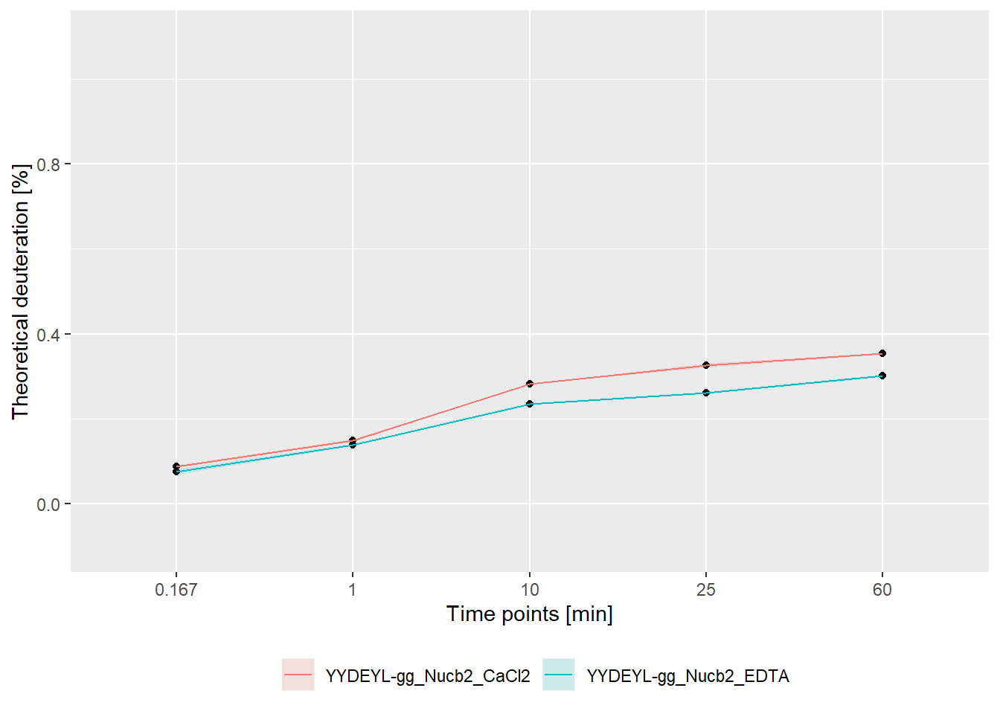
# experimental comparison plot - relative values
comparison_plot(calc_dat = calc_dat_1,
theoretical = FALSE,
relative = TRUE,
state_first = "CD160",
state_second = "CD160_HVEM")
# theoretical comparison plot - absolute values
comparison_plot(calc_dat = calc_dat_1,
theoretical = TRUE,
relative = FALSE,
state_first = "CD160",
state_second = "CD160_HVEM")
# experimental comparison plot - absolute values
comparison_plot(calc_dat = calc_dat_1,
theoretical = FALSE,
relative = FALSE,
state_first = "CD160",
state_second = "CD160_HVEM")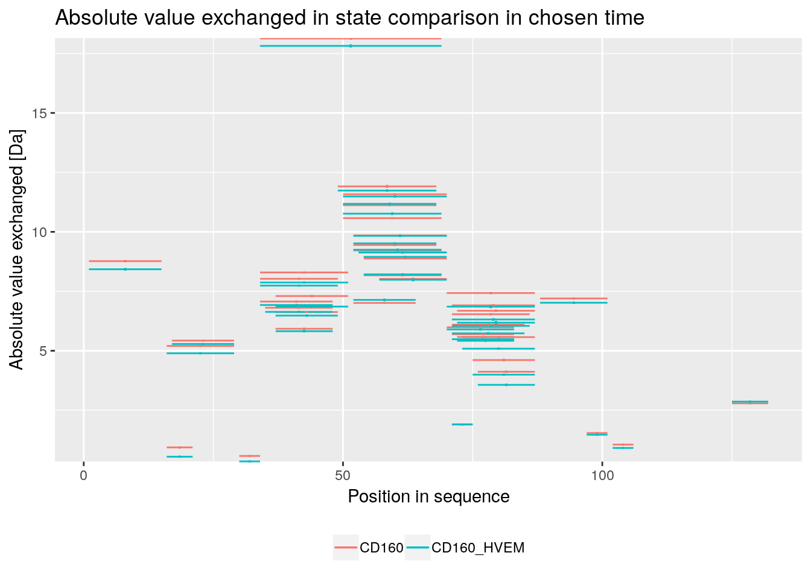
# theoretical Woods plot - relative values
woods_plot(calc_dat = calc_dat_1,
theoretical = TRUE,
relative = TRUE) +
coord_cartesian(ylim = c(-.2, .2))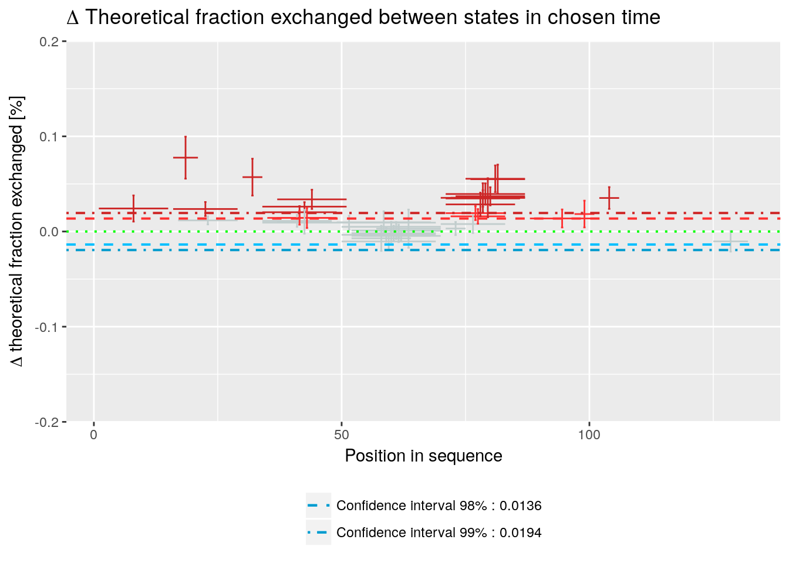
# experimental Woods plot - relative values
woods_plot(calc_dat = calc_dat_1,
theoretical = FALSE,
relative = TRUE) +
coord_cartesian(ylim = c(-.2, .2))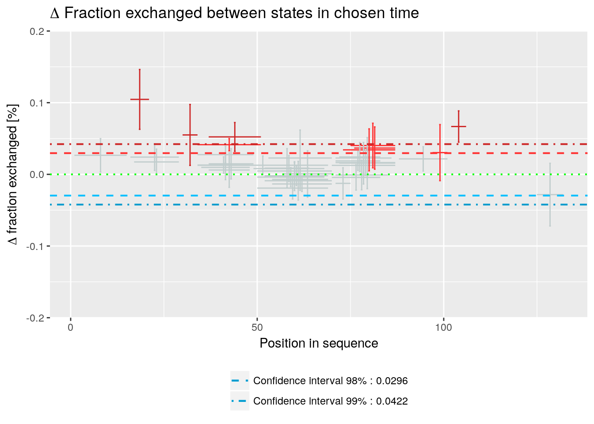
# theoretical Woods plot - absolute values
woods_plot(calc_dat = calc_dat_1,
theoretical = TRUE,
relative = FALSE) +
labs(title = "Theoretical fraction exchanged between states in 1 min time") 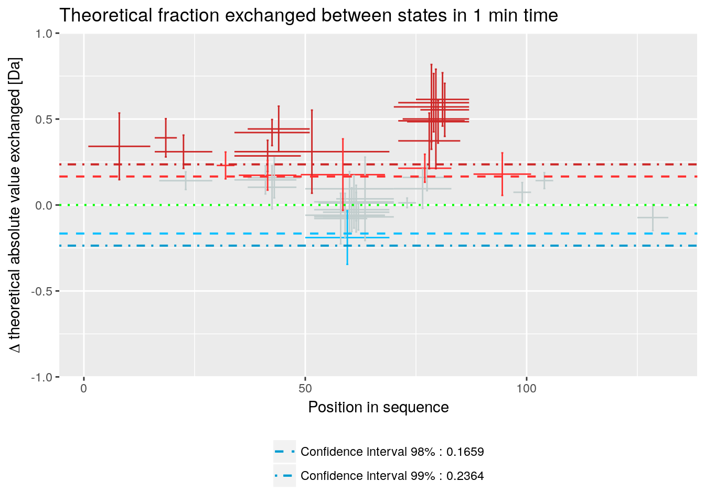
# experimental Woods plot - absolute values
woods_plot(calc_dat = calc_dat_1,
theoretical = FALSE,
relative = FALSE) +
labs(title = "Fraction exchanged between states in 1 min time") 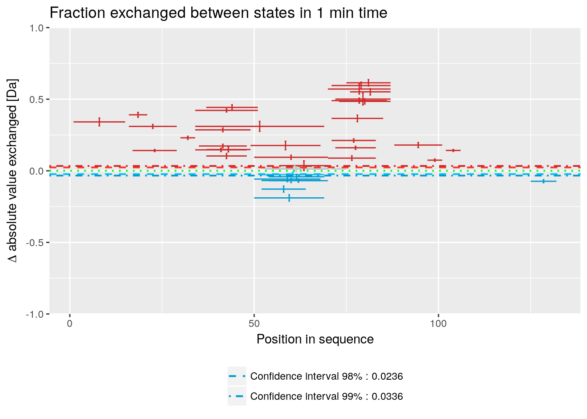
# quality control - relative values
(result <- quality_control(dat = dat_1,
state_first = "CD160",
state_second = "CD160_HVEM",
chosen_time = 1,
in_time = 0.001))## time avg_err_state_first sd_err_state_first avg_err_state_second
## 1 0.167 0.003919621 0.005116853 0.005738668
## 2 1.000 0.002607188 0.003708500 0.004930354
## 3 5.000 0.002925674 0.002207625 0.003811229
## 4 25.000 0.002086275 0.001636480 0.003375989
## 5 120.000 0.002124354 0.001284390 0.002759393
## 6 1440.000 0.001841383 0.001032972 0.002532581
## sd_err_state_second avg_err_theo_state_first sd_err_theo_state_first
## 1 0.007625134 0.0007087017 0.0005185554
## 2 0.006697768 0.0007087017 0.0005185554
## 3 0.004561764 0.0007087017 0.0005185554
## 4 0.003690424 0.0007087017 0.0005185554
## 5 0.001976257 0.0007087017 0.0005185554
## 6 0.001120593 0.0007087017 0.0005185554
## avg_err_theo_state_second sd_err_theo_state_second avg_diff
## 1 0.001236524 0.0005534176 0.007045439
## 2 0.001236524 0.0005534176 0.005709252
## 3 0.001236524 0.0005534176 0.004920756
## 4 0.001236524 0.0005534176 0.004053767
## 5 0.001236524 0.0005534176 0.003470818
## 6 0.001236524 0.0005534176 0.003200211
## sd_diff avg_theo_diff sd_theo_diff
## 1 0.009107625 0.001476534 0.0006500359
## 2 0.007555534 0.001476534 0.0006500359
## 3 0.004952401 0.001476534 0.0006500359
## 4 0.003949308 0.001476534 0.0006500359
## 5 0.002088545 0.001476534 0.0006500359
## 6 0.001369362 0.001476534 0.0006500359# example quality control visualisation
library(ggplot2)
ggplot(result) +
geom_line(aes(x = time, y = avg_err_state_first, color = "Average error (first state)")) +
geom_line(aes(x = time, y = avg_err_state_second, color = "Average error (second state)")) +
scale_x_log10() +
ylim(0, 0.05) +
labs(x = "log(time) [min]", y = "Average uncertainty", title = "Uncertainty change in out time") +
theme(legend.title = element_blank(),
legend.position = "bottom")
Example workflow 2
library(HaDeX)
# file import
dat_2 <- read_hdx(system.file(package = "HaDeX", "HaDeX/data/KD_190304_Nucb2_EDTA_CaCl2_test02_clusterdata.csv"))## Parsed with column specification:
## cols(
## Protein = col_character(),
## Start = col_double(),
## End = col_double(),
## Sequence = col_character(),
## Modification = col_logical(),
## Fragment = col_logical(),
## MaxUptake = col_double(),
## MHP = col_double(),
## State = col_character(),
## Exposure = col_double(),
## File = col_character(),
## z = col_double(),
## RT = col_double(),
## Inten = col_double(),
## Center = col_double()
## )# protein sequence reconstruction
reconstruct_sequence(dat_2)## [1] "xxxxxxxxxxxxxxxxVPIDIDKTKVKGEGHVEGEKIENPDTGLYYDEYLRQVIDVLETDKHFREKLQTADIEEIKSGKLSRELDLVSHHVRTRLDELKRQEVARLRMLIKAKMDSVQDTGIDHQALLKQFEHLNHQNPDTFEPKDLDMLIKAATSDLENYDKTRHEEFKKYEMxxxxxxxxxxxxLDEEKRQREESKFGEMxxxxxxxxxxxxxxxxxxxKEVWEEADGLDPNEFDPKTFFKLHDVNNDRFLDEQELEAxFTKELEKVYDPKNEEDDMVEMEEERLxxxxHVMNEVDINKDRLVTLEEFLRATEKKEFLEPDSWETLDQQQLFTEDELKEFESHISQQEDELRKKAEELQKQKEELQRQHDQLQAQEQELQQVVKQMEQKKLQQANPPAGPAGELK"# calculate data
calc_dat_2 <- prepare_dataset(dat = dat_2,
in_state_first = "gg_Nucb2_EDTA_0.001",
chosen_state_first = "gg_Nucb2_EDTA_25",
out_state_first = "gg_Nucb2_EDTA_1440",
in_state_second = "gg_Nucb2_CaCl2_0.001",
chosen_state_second = "gg_Nucb2_CaCl2_25",
out_state_second = "gg_Nucb2_CaCl2_1440")
# theoretical comparison plot - relative values
comparison_plot(calc_dat = calc_dat_2,
theoretical = TRUE,
relative = TRUE,
state_first = "Nucb2 Factor 1",
state_second = "Nucb2 Factor 2") +
labs(title = "Theoretical fraction exchanged in \nstate comparison in 25 min time")
# experimental comparison plot - relative values
comparison_plot(calc_dat = calc_dat_2,
theoretical = FALSE,
relative = TRUE,
state_first = "Nucb2 Factor 1",
state_second = "Nucb2 Factor 2") +
labs(title = "Fraction exchanged in \nstate comparison in 25 min time")
# theoretical comparison plot - absolute values
comparison_plot(calc_dat = calc_dat_2,
theoretical = TRUE,
relative = FALSE,
state_first = "Nucb2 Factor 1",
state_second = "Nucb2 Factor 2") +
labs(title = "Theoretical fraction exchanged in \nstate comparison in 25 min time")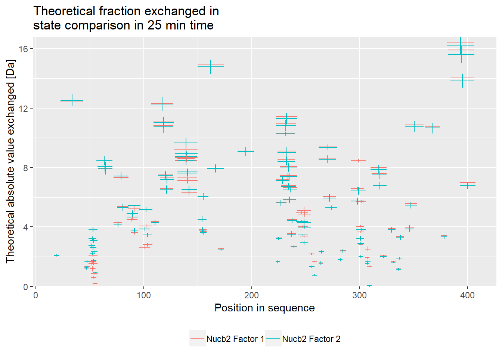
# experimental comparison plot - absolute values
comparison_plot(calc_dat = calc_dat_2,
theoretical = FALSE,
relative = FALSE,
state_first = "Nucb2 Factor 1",
state_second = "Nucb2 Factor 2") +
labs(title = "Fraction exchanged in \nstate comparison in 25 min time")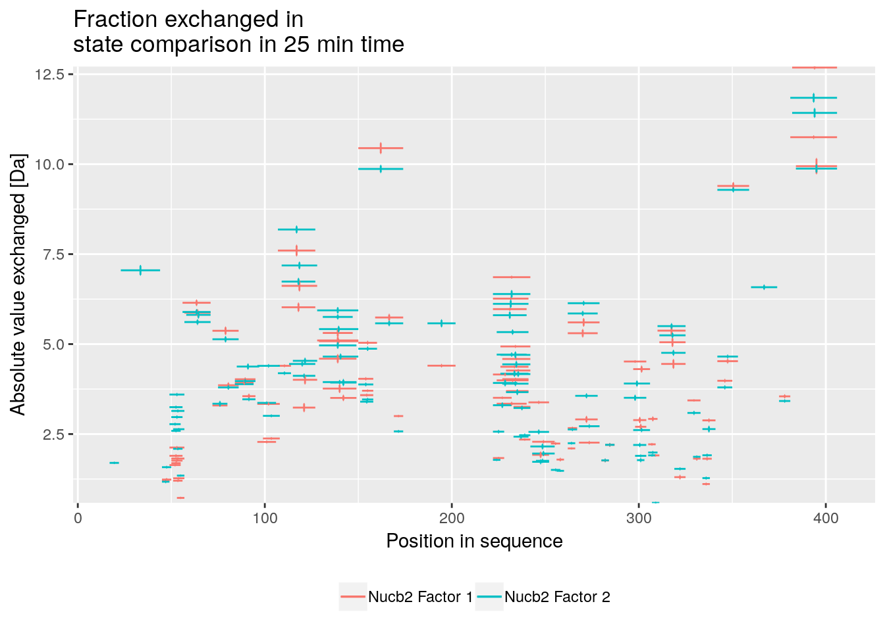
# theoretical Woods plot - relative values
woods_plot(calc_dat = calc_dat_2,
theoretical = TRUE,
relative = TRUE) +
labs(title = "Theoretical fraction exchanged between states in 25 min time") +
coord_cartesian(ylim = c(-.5, .7))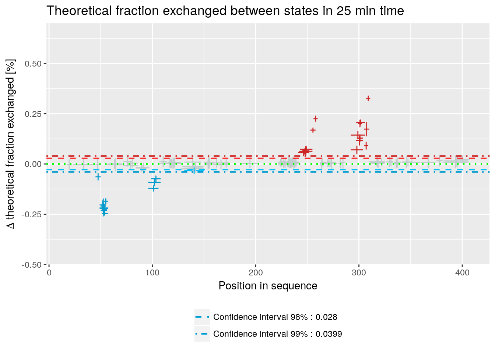
# experimental Woods plot - relative values
woods_plot(calc_dat = calc_dat_2,
theoretical = FALSE,
relative = TRUE) +
labs(title = "Fraction exchanged between states in 25 min time") +
coord_cartesian(ylim = c(-.5, .7))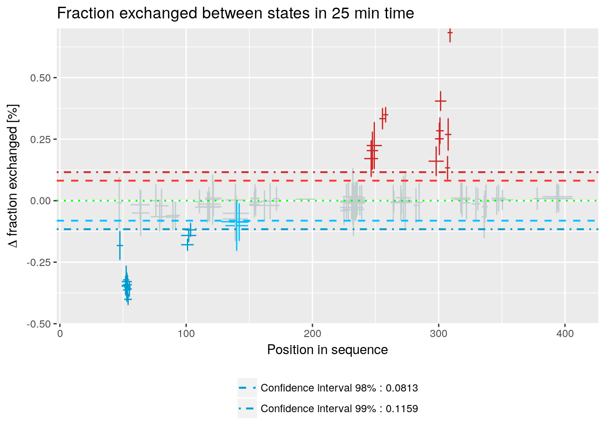
# theoretical Woods plot - absolute values
woods_plot(calc_dat = calc_dat_2,
theoretical = TRUE,
relative = FALSE) +
labs(title = "Theoretical fraction exchanged between states in 25 min time") 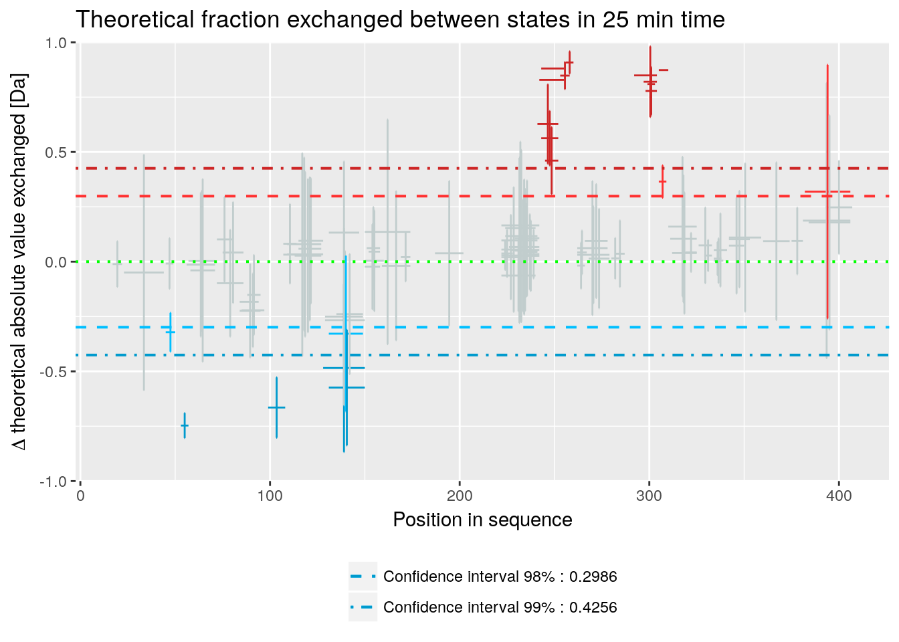
# experimental Woods plot - absolute values
woods_plot(calc_dat = calc_dat_2,
theoretical = FALSE,
relative = FALSE) +
labs(title = "Fraction exchanged between states in 25 min time") 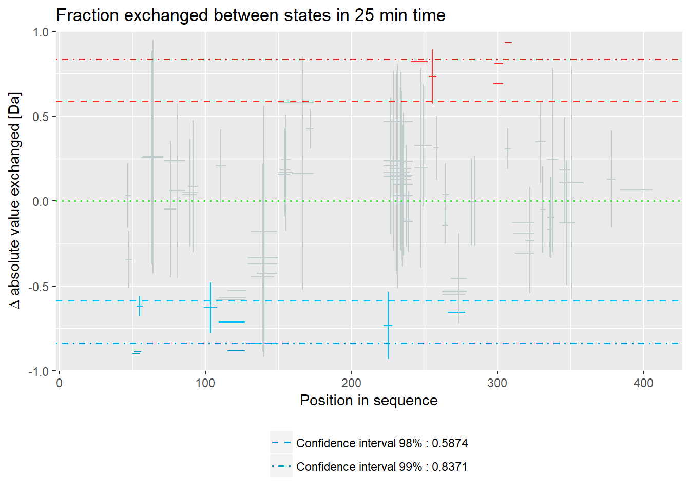
# quality control
(result <- quality_control(dat = dat_2,
state_first = "gg_Nucb2_EDTA",
state_second = "gg_Nucb2_CaCl2",
chosen_time = 25,
in_time = 0.001))## time avg_err_state_first sd_err_state_first avg_err_state_second
## 1 0.167 0.158083662 0.374221748 0.808330769
## 2 1.000 0.030622838 0.060927377 0.078091161
## 3 10.000 0.006651472 0.005621178 0.009344373
## 4 25.000 0.005796828 0.003283214 0.009559405
## 5 60.000 0.005530984 0.002672025 0.007094412
## 6 1440.000 0.005308684 0.002471285 0.006814869
## sd_err_state_second avg_err_theo_state_first sd_err_theo_state_first
## 1 2.551580562 0.001396896 0.0006199273
## 2 0.146589091 0.001396896 0.0006199273
## 3 0.005126022 0.001396896 0.0006199273
## 4 0.002774018 0.001396896 0.0006199273
## 5 0.002096056 0.001396896 0.0006199273
## 6 0.002019402 0.001396896 0.0006199273
## avg_err_theo_state_second sd_err_theo_state_second avg_diff
## 1 0.002539802 0.0007520063 0.563316031
## 2 0.002539802 0.0007520063 0.080138397
## 3 0.002539802 0.0007520063 0.011699777
## 4 0.002539802 0.0007520063 0.011419694
## 5 0.002539802 0.0007520063 0.009074865
## 6 0.002539802 0.0007520063 0.008631836
## sd_diff avg_theo_diff sd_theo_diff
## 1 1.248992873 0.002982639 0.0006774071
## 2 0.138961471 0.002982639 0.0006774071
## 3 0.006096753 0.002982639 0.0006774071
## 4 0.002828424 0.002982639 0.0006774071
## 5 0.002499717 0.002982639 0.0006774071
## 6 0.002732523 0.002982639 0.0006774071# example quality control visualisation - relative values
library(ggplot2)
ggplot(result[result["time"]>=1,]) +
geom_line(aes(x = time, y = avg_err_state_first, color = "Average error (first state)")) +
geom_line(aes(x = time, y = avg_err_state_second, color = "Average error (second state)")) +
scale_x_log10() +
labs(x = "log(time) [min]", y = "Average uncertainty", title = "Uncertainty change") +
theme(legend.position = "bottom",
legend.title = element_blank())